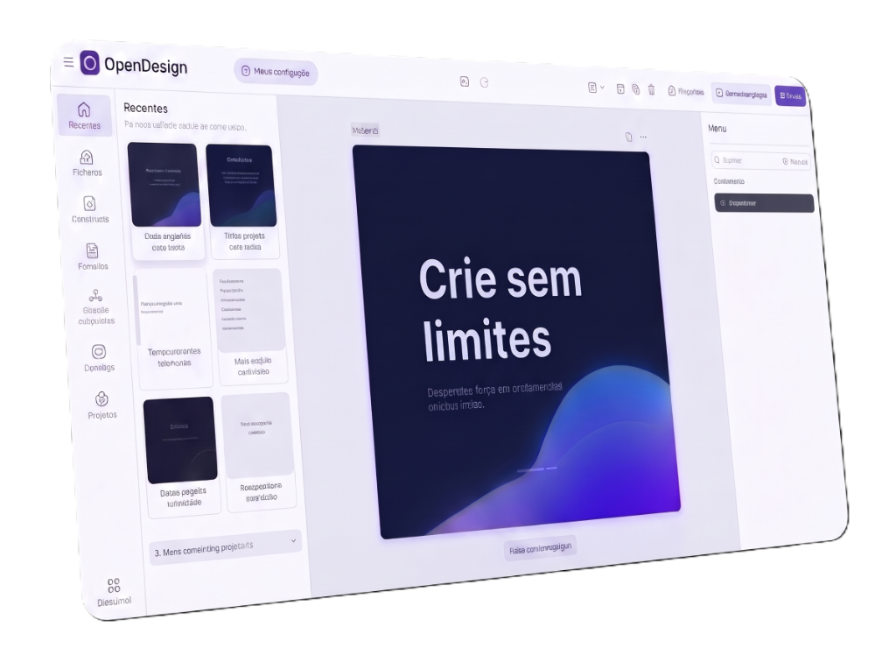
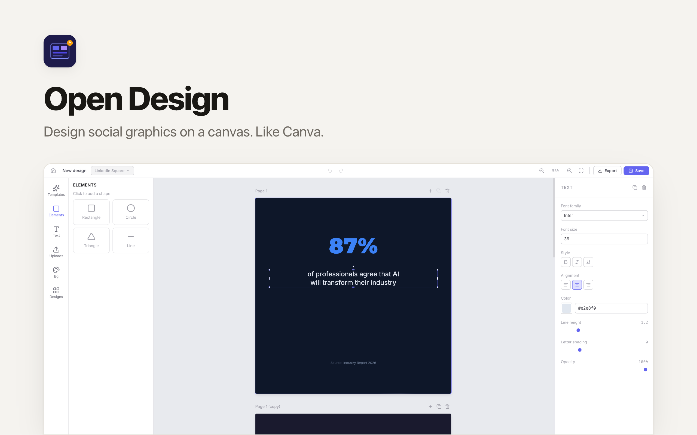

Um clique e pronto
Dê dois cliques no .exe. Sem instalar Node, dependências ou configurar servidor.
Crie posts, carrosséis e gráficos profissionais com um editor que roda offline. Rápido, intuitivo e poderoso, sem instalar nada nem depender da nuvem.

Empacotado com Tauri. Você baixa um arquivo, abre e usa — tudo acontece localmente.
Dê dois cliques no .exe. Sem instalar Node, dependências ou configurar servidor.
Projetos, páginas, brand kits e fontes são salvos em SQLite local na sua pasta do Windows.
Licença MIT. Sem plano pago, sem marca d'água e sem precisar criar conta.
Canvas em retina, templates prontos para redes sociais e exportação que funciona de verdade.
Renderização retina, edição fluida de objetos e desfazer/refazer.
Posts, carrosséis e stories com tamanhos prontos para LinkedIn e Instagram.
Exportação em alta resolução e carrossel completo em PDF multipágina.
Paleta, tipografia e logos aplicados em um clique entre seus projetos.
Importe TTF, OTF, WOFF e WOFF2 locais — elas viajam junto com o brand kit.
Automação com agentes de IA para preencher templates e gerar variações.
Uma interface nativa, leve e direta ao ponto, com tudo o que você precisa para gerenciar seus projetos.
Baixar para Windows →
app_data_dir/ └── opendesign.db ← seus projetos backend web ← não usado conta / nuvem ← inexistente
Sem API remota, sem login e sem telemetria. Tudo fica no seu banco SQLite local em %APPDATA%\com.opendesign.app\opendesign.db.
Confira o hash do executável publicado (13.946.880 bytes):
Windows SmartScreen: por ser open-source sem assinatura paga, o Windows pode exibir aviso; confira o SHA-256 com Get-FileHash .\OpenDesign.exe -Algorithm SHA256.
Sim. Código aberto sob licença MIT, sem assinatura, sem plano pago e sem marca d'água.
Não. O executável já embute tudo e salva localmente em SQLite.
.exe é portátil (basta abrir). NSIS cria atalhos e desinstalação limpa (recomendado). MSI é voltado a implantação corporativa.
Em %APPDATA%\com.opendesign.app\opendesign.db, na sua própria máquina.
Leve, rápido e 100% offline. Baixe a versão portátil ou o instalador para Windows.